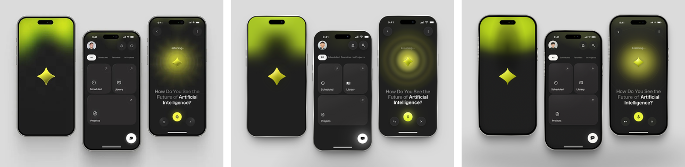
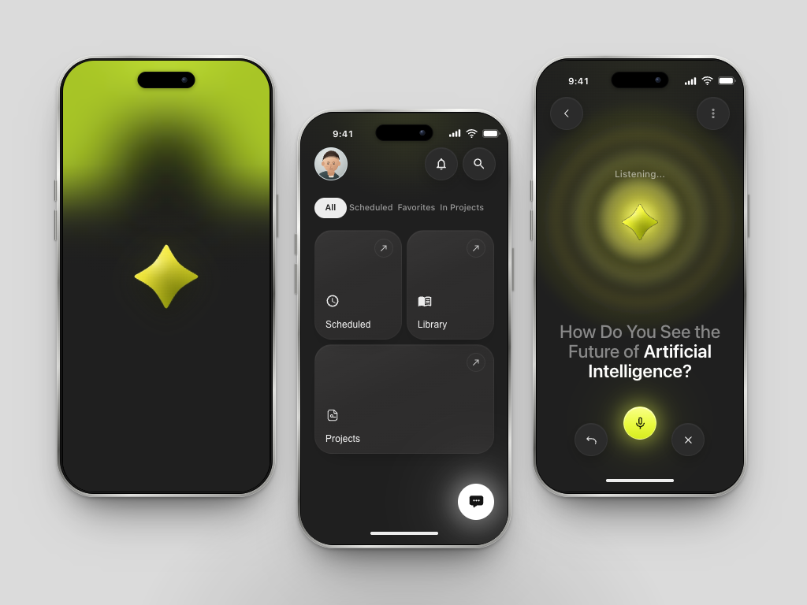
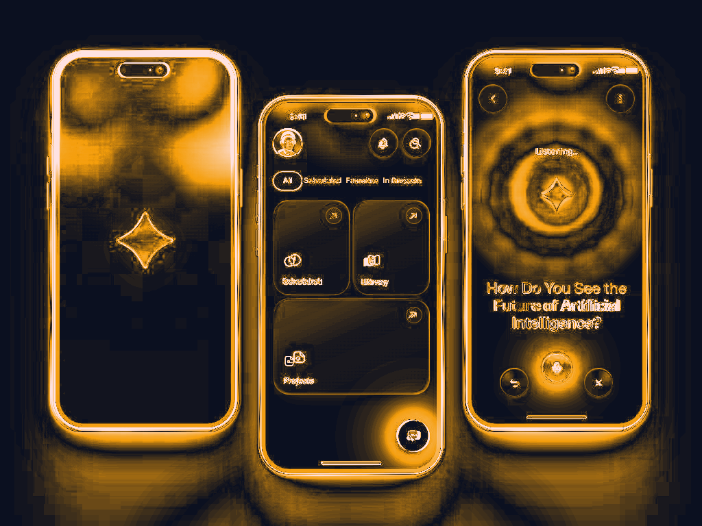
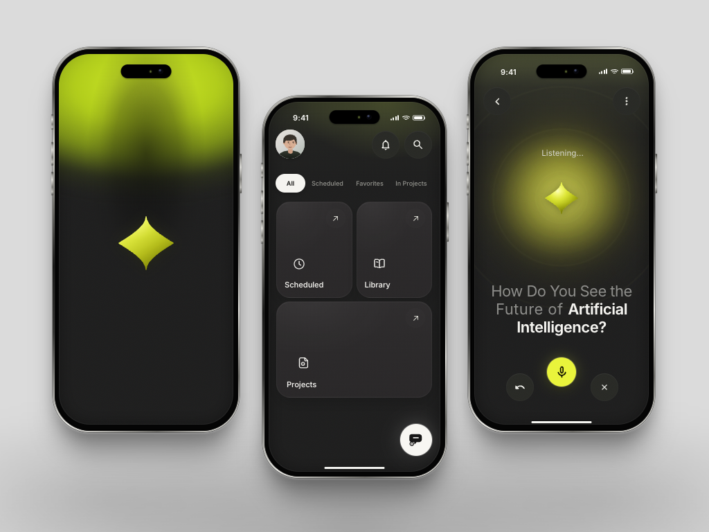
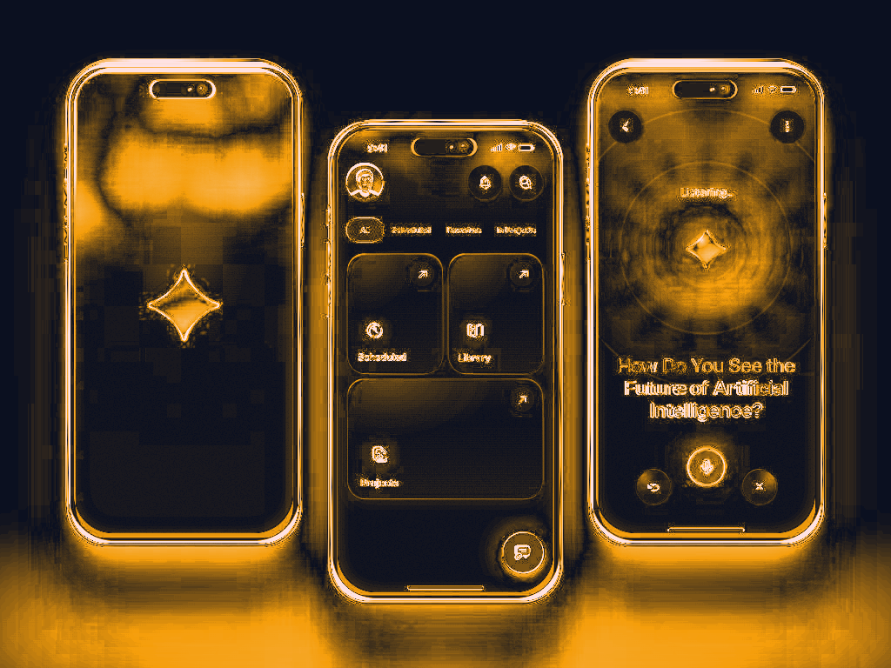

Fidelidade global
| Métrica | caso-a | caso-b | Δ |
|---|---|---|---|
| SSIM | 83.5% | 86.3% | -2.8 pp |
| Píxeis até Δ16 | 83.4% | 77.7% | +5.7 pp |
| Píxeis até Δ32 | 92.7% | 92.8% | -0.1 pp |
| Píxeis até Δ64 | 96.2% | 96.9% | -0.7 pp |
| Bordas (Sobel) | 53.2% | 57.9% | -4.7 pp |
| Paleta (similaridade) | 94.4% | 94.1% | +0.3 pp |
| MAE (menor melhor) | 10.59 | 11.26 | -0.66 |
| ΔE paleta (menor melhor) | 2.81 | 2.96 | -0.15 |
SSIM 1.0 = idêntico. “Pixels até Δ16” = fração de píxeis com maior diferença de canal ≤ 16/255. A referência é o próprio PNG 1024×768; o composto é 50% SSIM + 25% pixels≤Δ16 + 15% bordas + 10% paleta.
Fidelidade por região (SSIM)
| Região | caso-a | caso-b | Δ |
|---|---|---|---|
| left_glow | 70.7% | 73.4% | -2.6 pp |
| left_phone | 82.4% | 83.3% | -0.8 pp |
| left_star | 86.7% | 84.7% | +2.0 pp |
| middle_cards | 81.9% | 87.5% | -5.6 pp |
| middle_fab | 50.4% | 66.5% | -16.1 pp |
| middle_phone | 73.4% | 79.9% | -6.5 pp |
| middle_tabs | 71.7% | 79.5% | -7.8 pp |
| middle_top | 61.8% | 67.1% | -5.3 pp |
| right_buttons | 80.1% | 80.4% | -0.3 pp |
| right_orb | 79.5% | 86.4% | -6.9 pp |
| right_phone | 78.2% | 82.3% | -4.1 pp |
| right_title | 75.3% | 81.9% | -6.6 pp |
| right_top | 66.4% | 68.2% | -1.8 pp |
Como cada um performou
| Engenharia | caso-a | caso-b |
|---|---|---|
| Build OK | sim | sim |
| Tempo de build | 2.07s | 1.00s |
| JS+CSS gzip | 146.2 KiB | 118.9 KiB |
| Linhas de código | 1737 | 1944 |
| FCP / LCP | 176 / 176 ms | 180 / 180 ms |
| Nós DOM / MUI | 365 / 158 | 257 / 25 |
| axe (violações / nós) | 0 / 0 | 1 / 1 |
| Overflow 390px | não | não |
| Textos-chave encontrados | 11/11 | 11/11 |
| Tab muda estado | sim | sim |
| Mic muda estado | sim | sim |
| Adesão v9 | 83.3% (10/12) | 50.0% (6/12) |
| Duração | 36.8 min | 34.3 min |
| Passos | 115 | 148 |
| Chamadas de ferramenta | 205 | 165 |
| Tokens entrada | 459,619 | 357,578 |
| Tokens saída | 216,136 | 220,345 |
| Chamadas da skill | 1 | 0 |
| Arquivos da skill lidos | 5 | 0 |
| Acessos indevidos | 0 | 0 |
Checagens MUI v9
- caso-a: color_schemes_dark, slot_props
- caso-b: no_barrel_imports, path_imports_ratio, theme_provider_cssbaseline, color_schemes_dark, slot_props, fontsource
Neste alvo dark-only, sem alternância de tema e sem formulário/TextField, as checagens color_schemes_dark e slot_props não se aplicam; fontsource no check é específico de Roboto, mas o B usou Inter (fonte equivalente permitida). Falhas reais do B: barrel/path imports e ausência de ThemeProvider/CssBaseline. Aplicáveis: A 10/10, B 6/9.
Leitura
Melhor fidelidade: caso-b — composto 80.7/100, +0.7 pp sobre caso-a. SSIM 83.5% vs 86.3%; píxeis ≤Δ16 83.4% vs 77.7%.
Engenharia: caso-a 83.3% (10/12) vs caso-b 50.0% (6/12); payload 146.2 vs 118.9 KiB. Axe: 0 vs 1 violações.
Semelhança direta: SSIM 84.7%, píxeis ≤Δ16 72.7%.
- Fidelidade: B foi 0.7 pp melhor no composto e 2.8 pp melhor no SSIM; A foi 5.7 pp melhor em píxeis ≤Δ16 e teve MAE menor. B ganhou em 11 das 13 zonas; A ganhou em
left_star(+2,0 pp). O empate técnico é mais correto que “um venceu”. - Engenharia MUI: A 10/12 (10/10 aplicáveis) com 0 barrel imports, ThemeProvider/CssBaseline e CSS variables; B 6/12 (6/9 aplicáveis), com 2 barrels MUI + 2 de ícones e sem ThemeProvider/CssBaseline. A é o código mais idiomático; B é mais leve (118,9 vs 146,2 KiB gzip).
- Fonte: A seguiu o padrão da skill (Roboto, fonte default do MUI); B escolheu Inter. A referência é um mockup Apple/SF-like; o Inter do B ficou mais próximo, o que ajuda a explicar parte da vantagem de SSIM do B. É um trade-off real da recomendação de fonte da skill para um design não-Material.
- A11y: A 0 violações axe; B 1 (
aria-prohibited-attr, 1 nó). A verificou a11y e chegou a 0; B também afirma a11y, mas a medição achou 1. - Processo: A 36,8 min/676k tokens (1 chamada da skill, 5 arquivos lidos); B 34,3 min/578k (0/0). A carregou mais contexto (max input 291k vs 19k), mas B teve mais passos (148 vs 115) e mais chamadas de bash (103 vs 73).
- Isolamento: a referência é só o PNG; não há app-fonte, servidor 4180 nem scripts de medição na arena. O B rodou com o symlink da skill removido; 0 chamadas/leituras e 0 acessos indevidos nas duas sessões.
Imagens




